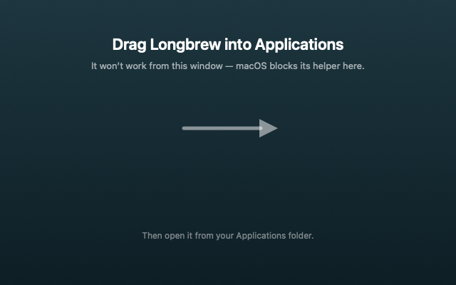

Longbrew
Keep your MacBook awake with the lid closed.
Release notes · Free · Universal (Apple silicon + Intel) · macOS 13 or later · Signed & notarized
What it does
Close the lid and your MacBook goes to sleep. Usually that's what you want — but not when it's running a build, finishing a download, playing music through a speaker, or sitting on a shelf doing a job.
macOS only keeps a closed MacBook awake if it's plugged in and attached to an external display. Longbrew removes that requirement: option-click the mug in the menu bar and the lid stops mattering.
A plain click is the lighter option, Espresso: your Mac stops idling to sleep while Longbrew is running, but the screen stays on and the lid has to stay open. It needs no setup and ends when you quit.
The mug always shows the current state, even if you change it from a terminal, and it starts empty every time Longbrew launches.
Read this before you use it
While it's on, your Mac won't sleep at all — not when idle, and not from the Apple menu. That's what makes lid-closed mode work, but it also means more battery use, and a closed laptop in a bag can get warm.
Turn it off when you're done. The setting is system-wide and survives a restart, so Longbrew asks before quitting while it's still on.
Installing

- Drag Longbrew into Applications — it won't run from the disk image.
- Open it, then choose Install Privileged Helper… from its menu.
- Approve Longbrew in System Settings → General → Login Items & Extensions.
That's the only setup. No Terminal, no password prompts afterwards.
How it works
Changing sleep behaviour (pmset -a disablesleep) needs root. Rather than
asking you to paste a sudo rule into Terminal, Longbrew installs a small
helper that macOS approves once, through its own UI.
- The helper does exactly one thing: turn lid-closed sleep on or off. It can't run anything else — the command and its arguments are fixed in the code.
- The app and the helper each verify the other's Apple Developer ID signature, so no other program can use the helper.
- Nothing is written to
/etc, and removing the helper restores normal sleep first.
It's about 700 lines of Swift, and all of it is on GitHub.
Support
Longbrew is free. If it saves you some hassle, a tip is always appreciated. I got kids!